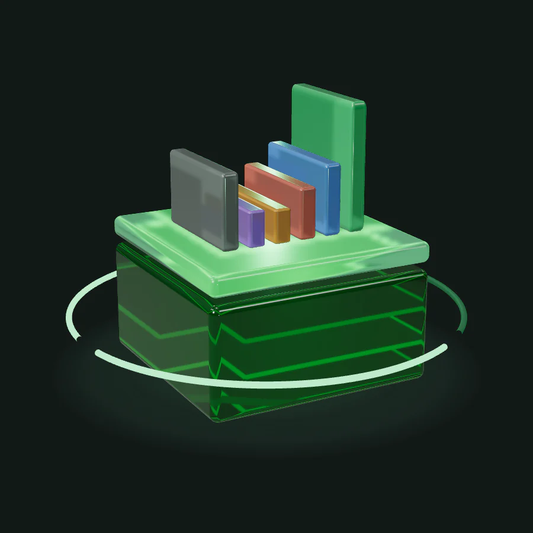

Рекомендация · объединённый продукт
Счёт, которым платят, открывает продукт; конверты появляются с первой целью и зарплатой. Прежние деньги остаются на 7,5%, новые получают ставку за поведение.
Копится · 7,5% и до 12,5%
203 600 ₽
60 800 ₽
запас и цели: прежние и новые деньги
тратится · без процентов
Пример: 10 декабря, после зарплаты. На счёте 264 400 ₽.